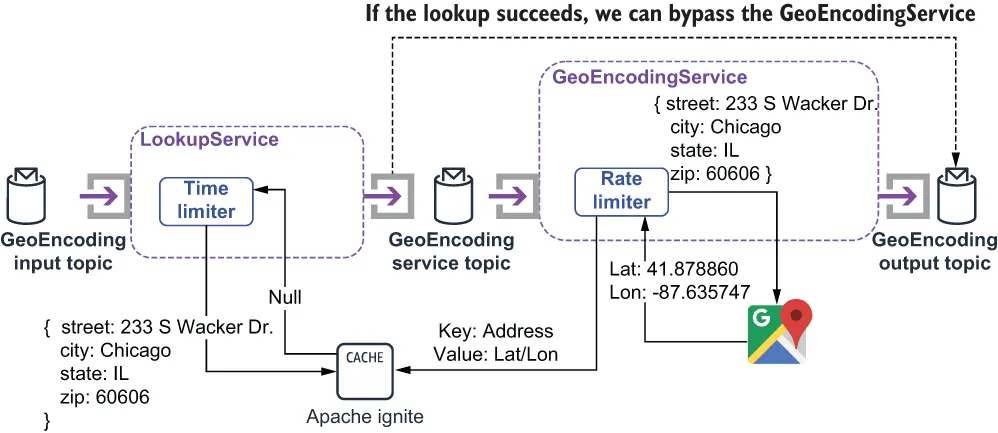

The time limiter pattern is used to limit the amount of time spent calling a remote service before terminating the connection from the client side. This effectively short circuits the timeout mechanism on the remote service and allows us to determine when to give up on the remote call and terminate the connection from the client side.
时限器（time limiter）模式被用来限制调用某个远程服务所花费的时间，超过之后就从客户端一侧终止连接。这实际上短路了远程服务那一侧的超时机制，让我们能够自行决定何时放弃这次远程调用，并从客户端一侧把连接掐断。
This behavior is useful when you have a tight SLA on the entire data pipeline and have allocated a small amount of time for interacting with the remote service. This allows the Pulsar function to continue processing without a response from the web service rather than waiting 30 or more seconds for the connection to timeout. Doing so boosts the throughput of the function, since it no longer has to waste 30 seconds waiting on a response from a faulty service.
当你对整个数据流水线有着严格的 SLA、并且只给"与远程服务交互"分配了很少一点时间时，这种行为就很有用。它让 Pulsar 函数能够在没有收到 Web 服务响应的情况下继续往下处理，而不是干等 30 秒甚至更久、直到连接超时。这样做提升了该函数的吞吐量，因为它再也不必为一个故障服务的响应白白浪费 30 秒。
Consider the scenario where you first make a call to an internal caching service, such as Apache Ignite, to see if you have the data you need prior to making a call to an external service to retrieve the value. The purpose of doing so is to speed up the processing inside your function by eliminating the need for a lengthy call to a remote service. However, you run the risk of your caching service itself being unresponsive, which would result in a lengthy pause while making that call. This would defeat the entire purpose of the cache. Therefore, you decide to allocate a time budget to the cache call of 500 milliseconds to limit the impact an unresponsive cache can have on your function.
设想这样一个场景：在去调用外部服务取值之前，你先调用一个内部缓存服务（例如 Apache Ignite），看看自己是否已经有所需的数据。这样做的目的是通过免除一次对远程服务的漫长调用，来加快函数内部的处理速度。然而，你同时也冒着一个风险：那个缓存服务本身可能没有响应，那就会导致发起这次调用时出现一次漫长的停顿。而这会让缓存的整个意义荡然无存。因此，你决定给这次缓存调用分配 500 毫秒的时间预算，以限制一个无响应的缓存可能对你的函数造成的影响。
Listing 9.6 Utilizing the time limiter pattern inside a Pulsar function
import io.github.resilience4j.timelimiter.TimeLimiter;
import io.github.resilience4j.timelimiter.TimeLimiterConfig;
import io.github.resilience4j.timelimiter.TimeLimiterRegistry;
public class LookupService implements Function<Address, Address> {
private TimeLimiter timeLimiter;
private IgniteCache<Address, Address> cache;
private String bypassTopic;
private boolean initalized = false;
public Address process(Address addr, Context ctx) throws Exception {
if (!initalized) {
init(ctx); ❶
}
Address geoEncodedAddr = timeLimiter.executeFutureSupplier( ❷
() -> CompletableFuture.supplyAsync(() ->
{ return cache.get(addr); })); ❸
if (geoEncodedAddr != null) { ❹
ctx.newOutputMessage(bypassTopic, AvroSchema.of(Address.class))
.properties(ctx.getCurrentRecord().getProperties())
.value(geoEncodedAddr)
.send();
}
return null;
}
private void init(Context ctx) {
bypassTopic = ctx.getUserConfigValue("bypassTopicName")
.get().toString(); ❺
TimeLimiterConfig config = TimeLimiterConfig.custom()
.cancelRunningFuture(true) ❻
.timeoutDuration(Duration.ofMillis(500)) ❼
.build();
TimeLimiterRegistry registry = TimeLimiterRegistry.of(config);
timeLimiter = registry.timeLimiter("my-time-limiter"); ❽
IgniteConfiguration cfg = new IgniteConfiguration(); ❾
cfg.setClientMode(true);
cfg.setPeerClassLoadingEnabled(true);
TcpDiscoveryMulticastIpFinder ipFinder =
new TcpDiscoveryMulticastIpFinder();
ipFinder.setAddresses(Collections.singletonList(
"127.0.0.1:47500..47509"));
cfg.setDiscoverySpi(new TcpDiscoverySpi().setIpFinder(ipFinder));
Ignite ignite = Ignition.start(cfg); ❿
cache = ignite.getOrCreateCache("geo-encoded-addresses"); ⓫
}
}
❶ Initializes the time limiter and the ignite cache
❶ 初始化时限器和 Ignite 缓存。
❷ Invokes the cache lookup and limits the duration of the call via the time limiter
❷ 发起缓存查询，并通过时限器限制这次调用的时长。
❸ The cache lookup that is executed asynchronously
❸ 被异步执行的缓存查询。
❹ If we have a cache hit, then publish the value to the different output topic.
❹ 如果缓存命中，就把该值发布到那个不同的输出主题。
❺ The bypass topic is configurable.
❺ 旁路主题是可配置的。
❻ Cancel running calls that exceed the time limit.
❻ 取消那些超出时限的、仍在运行中的调用。
❼ Sets a time limit of 500 milliseconds
❼ 设定 500 毫秒的时限。
❽ Creates the time limiter based on the configuration
❽ 基于该配置创建时限器。
❾ Configures the Apache Ignite client
❾ 配置 Apache Ignite 客户端。
❿ Connects to the Apache Ignite service
❿ 连接到 Apache Ignite 服务。
⓫ Retrieves the local cache that stores geo-encoded addresses
⓫ 取出那个存放已地理编码地址的本地缓存。
In order to utilize the time limiter pattern inside your Pulsar function, you need to wrap the remote service call inside a CompletableFuture and execute it via the TimeLimter’s executeFutureSupplier method, as shown in listing 9.6. This lookup function assumes that the cache is populated inside the function that calls the Google Maps API. This allows us to restructure the geo-encoding process slightly to have the lookup occur before the call to the GeoEncodingService, as shown in figure 9.11.
要在自己的 Pulsar 函数中使用时限器模式，你需要把远程服务调用包进一个 CompletableFuture，并通过 TimeLimiter 的 executeFutureSupplier 方法来执行它，如清单 9.6 所示。这个查询函数假定：那个缓存是在调用 Google Maps API 的那个函数内部被填充的。这让我们可以把地理编码流程稍稍重构一下，让查询发生在调用 GeoEncodingService 之前，如图 9.11 所示。

Figure 9.11 The lookup service can be used to prevent unnecessary calls to the GeoEncodingService if we already have the latitude/longitude pair for a given address. The cache is populated with the results from the Google Maps API calls.
图 9.11 如果我们已经拥有某个给定地址所对应的经纬度对，那么就可以用这个查询服务来避免对 GeoEncodingService 的不必要调用。该缓存由 Google Maps API 调用的结果填充。
Again, this type of design is intended to speed up the geo-encoding process, and thus, we need to limit the amount of time we are willing to wait to get a response back from Apache Ignite before abandoning the call. If the cache lookup succeeds, then the LookupService will publish a message directly to the same GeoEncoding output topic as the GeoEncodingService does. The downstream consumer doesn’t care who published the message as long as it has the correct contents.
同样地，这类设计旨在加快地理编码流程，因此我们需要限制"在放弃这次调用之前，愿意等待 Apache Ignite 返回响应多久"。如果缓存查询成功，那么 LookupService 就会直接把一条消息发布到与 GeoEncodingService 相同的那个 GeoEncoding 输出主题上。下游消费者并不关心这条消息是谁发布的，只要它的内容正确即可。
Issues and considerations
问题与考量
While this is a very useful pattern to use when interacting with an external system such as a web service or a database, be sure to consider the following factors when implementing it inside your Pulsar function:
虽然在与外部系统（例如 Web 服务或数据库）交互时，这是一个非常有用的模式，但在自己的 Pulsar 函数中实现它时，务必考虑以下这些因素：
Adjust the time limit to match the business SLA requirements of your application. An overly aggressive time limit will cause successful calls to be abandoned too soon, resulting in unnecessary work on the remote service and missing data inside your Pulsar function.
把时限调整到与你应用的业务 SLA 要求相匹配。过于激进的时限会导致那些本会成功的调用被过早放弃，从而在远程服务那侧造成无谓的工作，并在你的 Pulsar 函数内部造成数据缺失。
Do not use this pattern on operations that are idempotent; otherwise you might experience unintended side effects. It is best to only use this pattern on lookup calls and other non-state changing functions or services.
不要在幂等的操作上使用这个模式，否则你可能会遭遇意料之外的副作用。最好只在查询调用以及其他不改变状态的函数或服务上使用这个模式。